Koronar arteriyalarda ciddi daralma və ya tıxanıqlıq zamanı tətbiq olunan cərrahi müdaxilədir. Məqsəd ürək əzələsinə qan axınını bərpa etmək və infarkt riskini azaltmaqdır.
Koronar arter daralması və ya tıxanıqlığı ürək əzələsinin oksigenlə təminatını azaldır və infarkt riskini artırır. Koronar bypass əməliyyatı qan axınını alternativ damar yolu ilə bərpa edərək ürəyin funksiyasını qorumağa və həyat keyfiyyətini yaxşılaşdırmağa yönəlmiş əsas cərrahi üsuldur.
Tez-tez verilən suallar
Açıq ürək əməliyyatı döş sümüyü açılaraq və kardiopulmoner bypass aparatı vasitəsilə icra olunan cərrahi müdaxilədir. Koronar bypass, qapaq xəstəlikləri, aorta anevrizması və anadangəlmə ürək qüsurlarında tətbiq edilir.
Müalicə olunmadıqda sağ ürək boşluqları genişlənir, pulmonar hipertenziya və ürək çatışmazlığı inkişaf edə bilər.

Şirvan bölgəsinin tibb tarixinə ilk açıq ürək əməliyyatını yazan cərrah (21 fevral 2024).
Azərbaycan Ürək-Damar Cərrahiyyəsi Cəmiyyəti (AÜDCC) üzvü. Bakı Ürək Günləri konqreslərinin iştirakçısı.
Xaricdə imtina edilmiş çətin klinik vəziyyətlərdə müvəffəqiyyətli müdaxilə.
Endoskopik qapaq əməliyyatları, kiçik kəsikli bypass – daha az risk, tez sağalma.


RƏYLƏR

Xaricdə əməliyyatdan imtina etdilər. Dr. Beyrək bizi qurtardı. İki ay sonra həyatımıza qayıtdıq.
82 yaşında bypass keçirdim. 6 gün sonra evə getdim. Çox sağ olun, həkimim.
4 damar bypass – klinik prosedur çox peşəkar aparıldı. Bütün göstəricilər normal.
32 yaşında ASD ilə gəldim. 5 gün sonra evə yazıldım. Gözəl komanda!